beta_0 <- 50
beta_1 <- 20
beta_2 <- 0.07
beta_3 <- 35
beta_4 <- 0.01
beta_5 <- -10
IQ <- 110
GPA <- 4
GEN <- 1
beta_0 + GPA * beta_1 + IQ * beta_2 + GEN * beta_3 + GPA * IQ * beta_4 + GPA * GEN * beta_5[1] 137.13)
a) iii. is correct because even though in the baseline case females earn more, the interaction effect is negative, and if the GPA is sufficiently high (at least 3.5), men earn more.
b)
beta_0 <- 50
beta_1 <- 20
beta_2 <- 0.07
beta_3 <- 35
beta_4 <- 0.01
beta_5 <- -10
IQ <- 110
GPA <- 4
GEN <- 1
beta_0 + GPA * beta_1 + IQ * beta_2 + GEN * beta_3 + GPA * IQ * beta_4 + GPA * GEN * beta_5[1] 137.1c) FALSE
In the interaction effect we multiply IQ with GPA. The resulting number is thus big, so a small coefficient is okay. Whether it is statistically significant depends on the standard deviation of the variable and the sample size. (t test)
6) In the simple regression case we have
\[ \hat{y_i} = \hat{\beta _0} + \hat{\beta _1} x_i \]
If we plug in \(x_i = \bar{x}\) and use 3.4, we get:
\[ \hat{y_i} = \bar{y} - \hat{\beta _1} \bar{x} + \hat{\beta _1} \bar{x} = \bar{y} \]
Thus the statement is proven.
11)
a)
set.seed(1)
x = rnorm(100)
y = 2*x+rnorm(100)
reg_a <- lm(y~x+0)
summary(reg_a)
Call:
lm(formula = y ~ x + 0)
Residuals:
Min 1Q Median 3Q Max
-1.9154 -0.6472 -0.1771 0.5056 2.3109
Coefficients:
Estimate Std. Error t value Pr(>|t|)
x 1.9939 0.1065 18.73 <2e-16 ***
---
Signif. codes: 0 '***' 0.001 '**' 0.01 '*' 0.05 '.' 0.1 ' ' 1
Residual standard error: 0.9586 on 99 degrees of freedom
Multiple R-squared: 0.7798, Adjusted R-squared: 0.7776
F-statistic: 350.7 on 1 and 99 DF, p-value: < 2.2e-16The coefficient is 1.9939, and it is significant, because the p value is very small.
b)
reg_b <- lm(x~y+0)
summary(reg_b)
Call:
lm(formula = x ~ y + 0)
Residuals:
Min 1Q Median 3Q Max
-0.8699 -0.2368 0.1030 0.2858 0.8938
Coefficients:
Estimate Std. Error t value Pr(>|t|)
y 0.39111 0.02089 18.73 <2e-16 ***
---
Signif. codes: 0 '***' 0.001 '**' 0.01 '*' 0.05 '.' 0.1 ' ' 1
Residual standard error: 0.4246 on 99 degrees of freedom
Multiple R-squared: 0.7798, Adjusted R-squared: 0.7776
F-statistic: 350.7 on 1 and 99 DF, p-value: < 2.2e-16The coefficient is 0.39, and it is significant, with t t and p value being the same as in the last case.
c) t the test and the p value are the same
d) ?
e) ?
f)
reg_f_1 <- lm(x~y)
reg_f_2 <- lm(y~x)
summary(reg_f_1)
Call:
lm(formula = x ~ y)
Residuals:
Min 1Q Median 3Q Max
-0.90848 -0.28101 0.06274 0.24570 0.85736
Coefficients:
Estimate Std. Error t value Pr(>|t|)
(Intercept) 0.03880 0.04266 0.91 0.365
y 0.38942 0.02099 18.56 <2e-16 ***
---
Signif. codes: 0 '***' 0.001 '**' 0.01 '*' 0.05 '.' 0.1 ' ' 1
Residual standard error: 0.4249 on 98 degrees of freedom
Multiple R-squared: 0.7784, Adjusted R-squared: 0.7762
F-statistic: 344.3 on 1 and 98 DF, p-value: < 2.2e-16summary(reg_f_2)
Call:
lm(formula = y ~ x)
Residuals:
Min 1Q Median 3Q Max
-1.8768 -0.6138 -0.1395 0.5394 2.3462
Coefficients:
Estimate Std. Error t value Pr(>|t|)
(Intercept) -0.03769 0.09699 -0.389 0.698
x 1.99894 0.10773 18.556 <2e-16 ***
---
Signif. codes: 0 '***' 0.001 '**' 0.01 '*' 0.05 '.' 0.1 ' ' 1
Residual standard error: 0.9628 on 98 degrees of freedom
Multiple R-squared: 0.7784, Adjusted R-squared: 0.7762
F-statistic: 344.3 on 1 and 98 DF, p-value: < 2.2e-1615)
a)
library(ISLR2)
df <- Boston
regs <- list() #create a list
for (i in colnames(df[-1])){ #loop over all the variables
tmp_y <- df[["crim"]]
tmp_x <- df[[i]]
tmp <- lm(tmp_y ~ tmp_x)
regs[[i]] <- tmp
}
reg_sig <- list()
sig_num <- c()
for (r in names(regs)) { #find significant results
if (summary(regs[[r]])$coefficients[2,4] <= 0.05){
tmp <- regs[[r]]
reg_sig[[r]] <- tmp
}
}
names(reg_sig) [1] "zn" "indus" "nox" "rm" "age" "dis" "rad"
[8] "tax" "ptratio" "lstat" "medv" 11 variables are significant with a p value less than 0.05. The exception is chas.
for (r in names(regs)) { #plot the results
plot(df[[r]],df$crim, ylab = "Criminality", xlab = r)
abline(regs[[r]])
}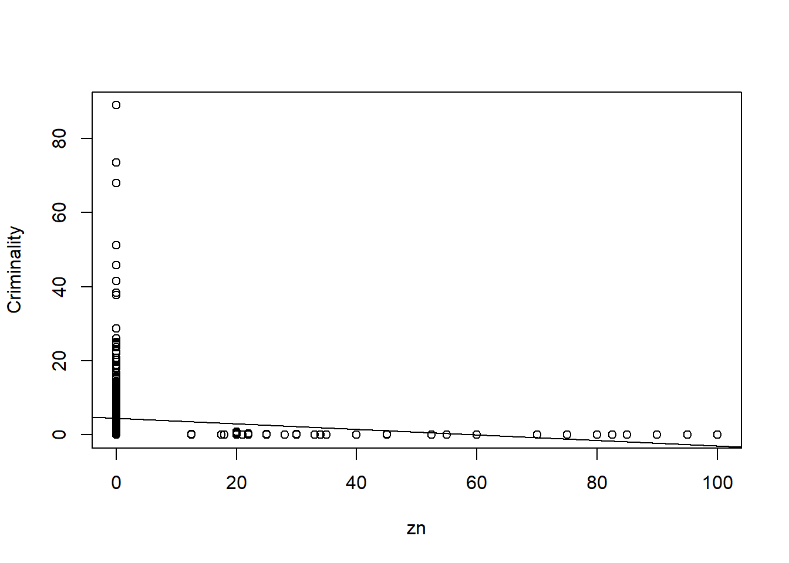
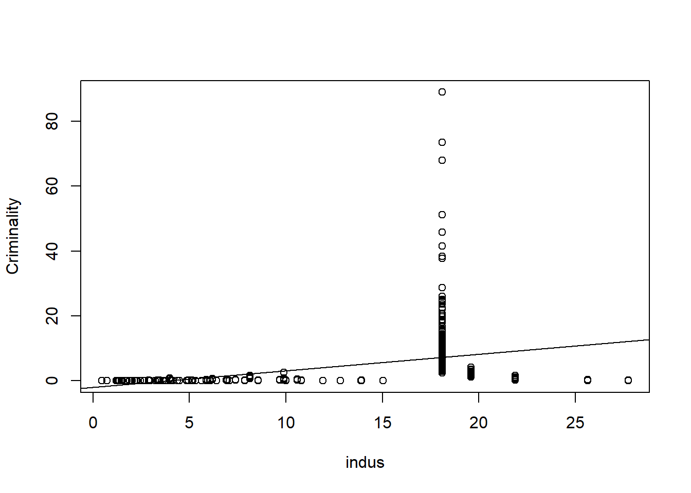
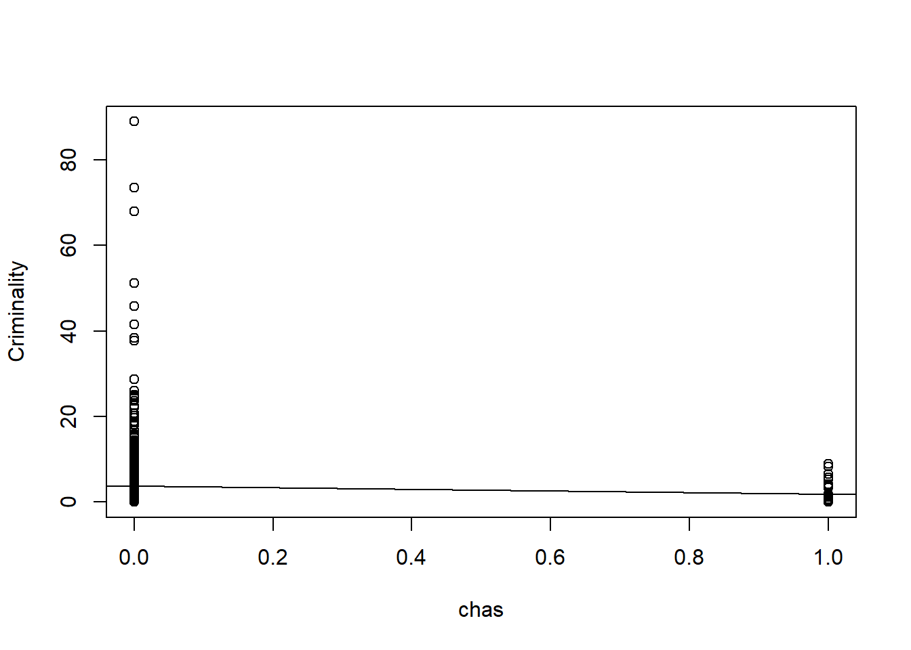
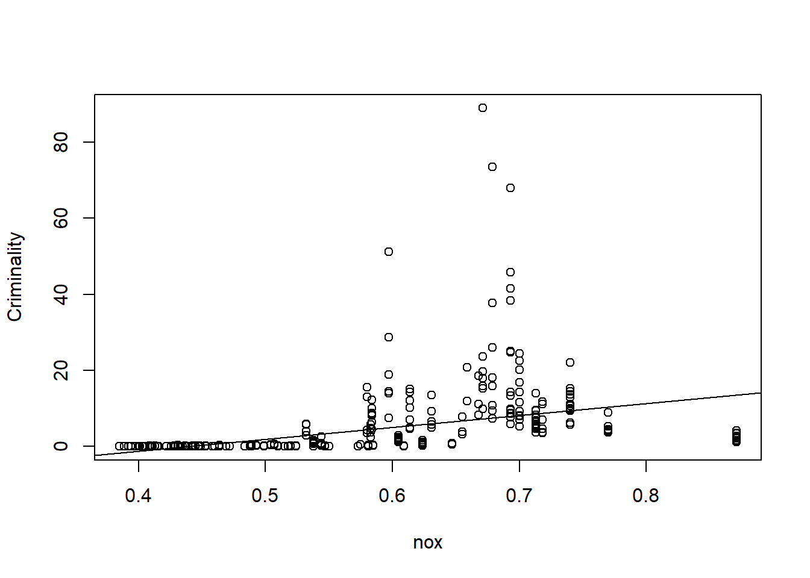
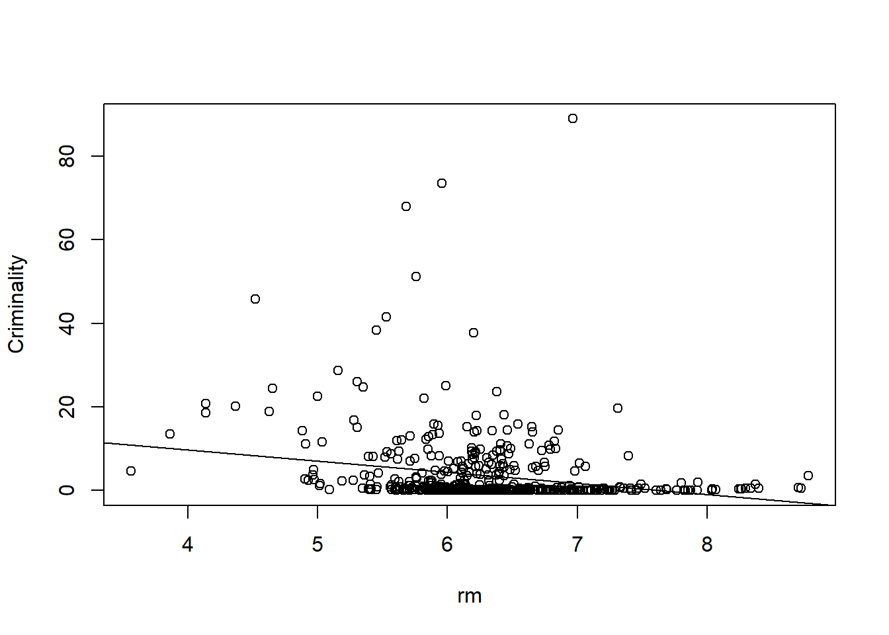
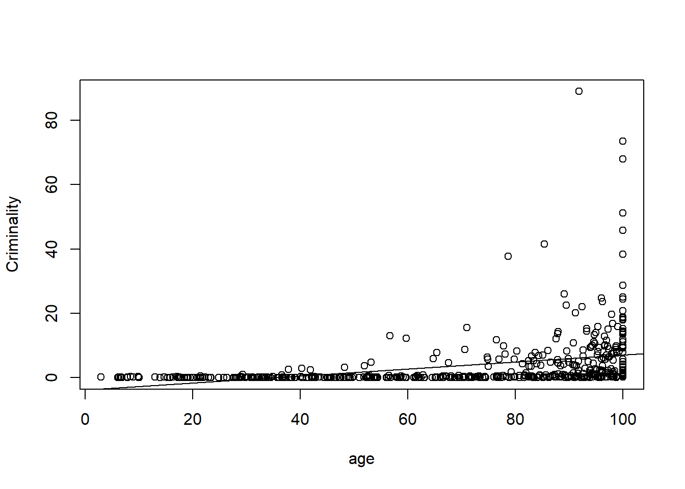
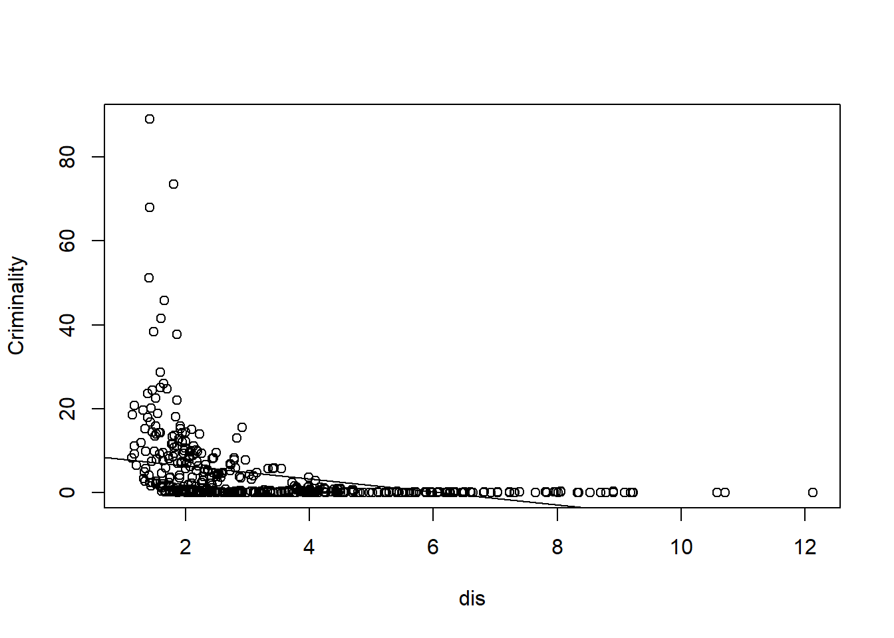
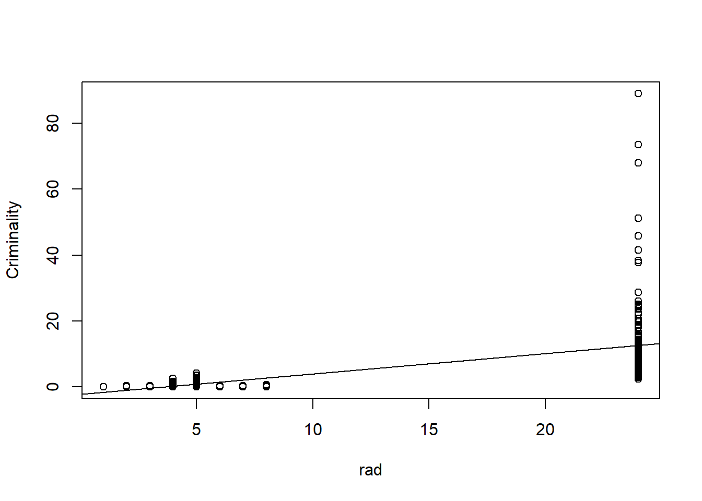
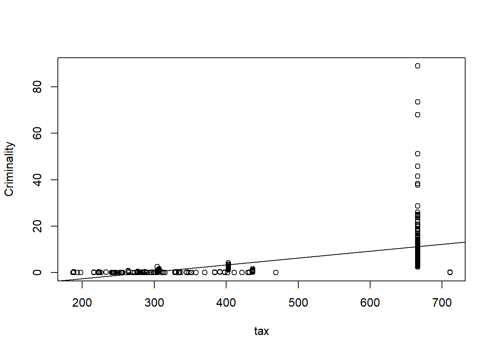
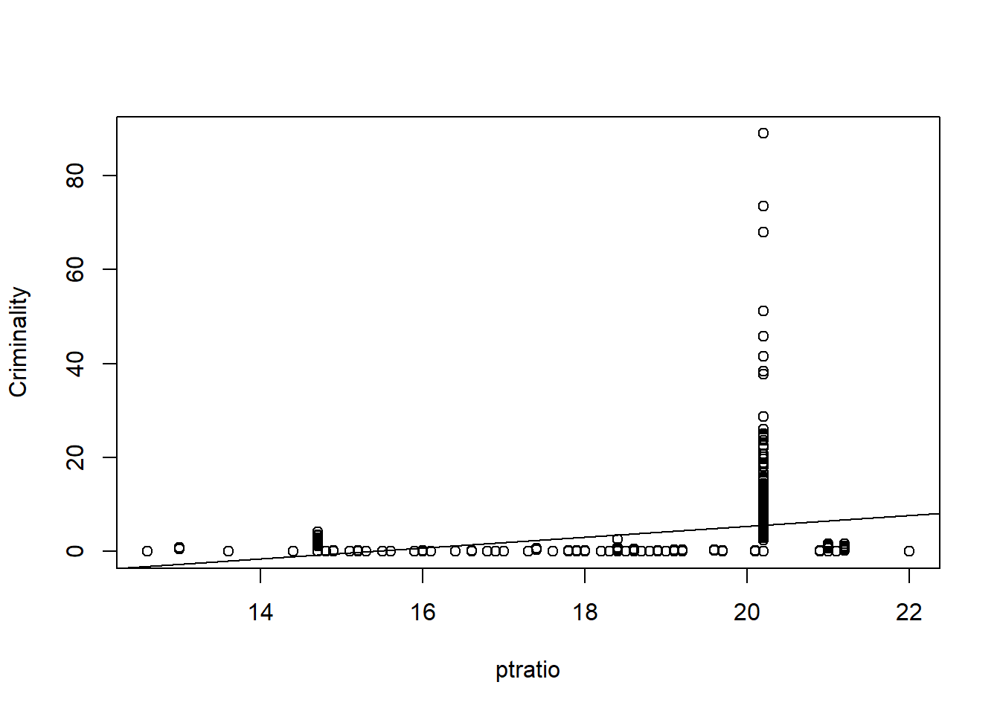
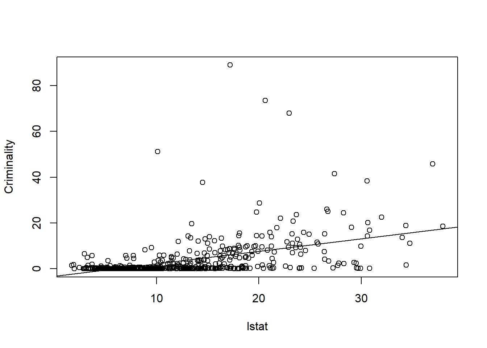

b)
reg_multi <- lm(crim ~ ., df)
summary(reg_multi)
Call:
lm(formula = crim ~ ., data = df)
Residuals:
Min 1Q Median 3Q Max
-8.534 -2.248 -0.348 1.087 73.923
Coefficients:
Estimate Std. Error t value Pr(>|t|)
(Intercept) 13.7783938 7.0818258 1.946 0.052271 .
zn 0.0457100 0.0187903 2.433 0.015344 *
indus -0.0583501 0.0836351 -0.698 0.485709
chas -0.8253776 1.1833963 -0.697 0.485841
nox -9.9575865 5.2898242 -1.882 0.060370 .
rm 0.6289107 0.6070924 1.036 0.300738
age -0.0008483 0.0179482 -0.047 0.962323
dis -1.0122467 0.2824676 -3.584 0.000373 ***
rad 0.6124653 0.0875358 6.997 8.59e-12 ***
tax -0.0037756 0.0051723 -0.730 0.465757
ptratio -0.3040728 0.1863598 -1.632 0.103393
lstat 0.1388006 0.0757213 1.833 0.067398 .
medv -0.2200564 0.0598240 -3.678 0.000261 ***
---
Signif. codes: 0 '***' 0.001 '**' 0.01 '*' 0.05 '.' 0.1 ' ' 1
Residual standard error: 6.46 on 493 degrees of freedom
Multiple R-squared: 0.4493, Adjusted R-squared: 0.4359
F-statistic: 33.52 on 12 and 493 DF, p-value: < 2.2e-16Here in much less variables is the result significant. Only for the following (with a alpha of 0.05):
indus, dis, rad, medv
c)
x_axis <-c()
y_axis <- c()
for (r in names(regs)) {
x_axis[r] <- summary(regs[[r]])$coefficients[2,1]
}
y_axis <- summary(reg_multi)$coefficients[-1,1]
plot(x_axis, y_axis)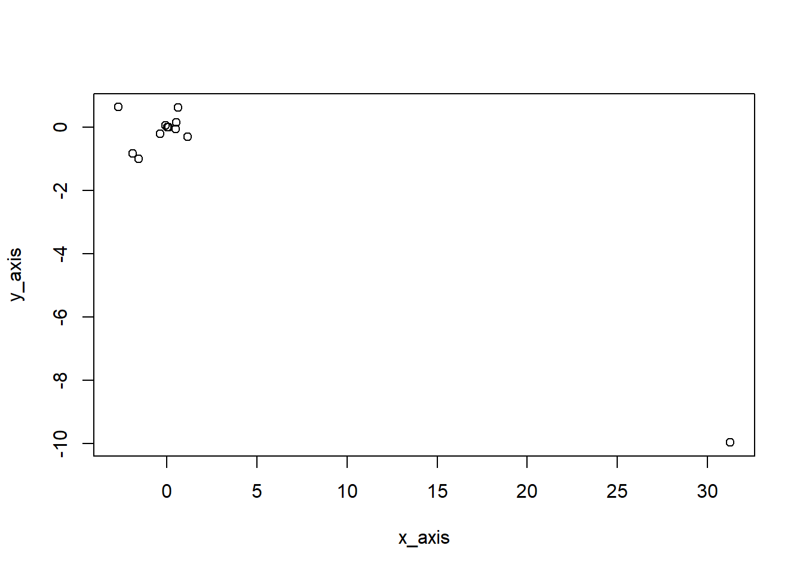
d)
regs_nonlinear <- list()
for (i in colnames(df[-1])){
tmp_y <- df[["crim"]]
tmp_x <- df[[i]]
tmp_x_2 <- tmp_x * tmp_x
tmp_x_3 <- tmp_x * tmp_x * tmp_x
tmp <- lm(tmp_y ~ tmp_x + tmp_x_2 + tmp_x_3)
regs_nonlinear[[i]] <- tmp
}1)
Starting from 4.2:
\[ p(X) + p(X) e^{\beta_0+\beta_1X} = e^{\beta_0+\beta_1X} \]
\[ \frac{p(X)}{1-p(X)} + \frac{p(X) e^{\beta_0+\beta_1X}}{1-p(X)} = \frac{e^{\beta_0+\beta_1X}}{1-p(x)} \]
\[ \frac{p(X)}{1-p(X)} = \frac{e^{\beta_0+\beta_1X}}{1-p(x)} - \frac{p(X) e^{\beta_0+\beta_1X}}{1-p(X)} \]
\[ \frac{p(X)}{1-p(X)} = \frac{e^{\beta_0+\beta_1X} - p(X) e^{\beta_0+\beta_1X}}{1-p(X)} \]
\[ \frac{p(X)}{1-p(X)} = \frac{e^{\beta_0+\beta_1X} (1-p(X))}{1-p(X)} \]
\[ \frac{p(X)}{1-p(X)} = e^{\beta_0+\beta_1X} \]
2) ?
4)
a) 10%
b)1%
c) \(10^{100}\)%
d) As we can see, the higher the dimensionality goes, the less probable it is that we already have an observation which is similar in each dimension. Because of this, our averages will be based on a low sample size, making our prediction weak.
e)
p=1: the “side” is 1/10 length
p=2: 0,316227766 (\(\sqrt{0.1}\) )
p=100: 0.97237221 (\(\sqrt[100]{0.1}\))
16) ?